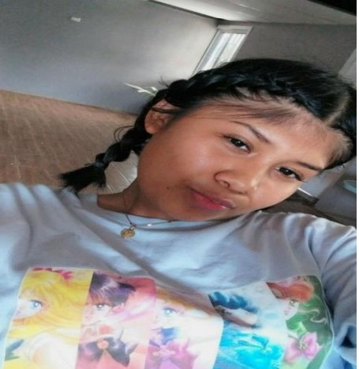

Me llamo Olga Karina González Miranda ,nací en Panamá provincia de chiriquí, el 4 de
septiembre del 2006 y tengo 18 años.
Vivo en arraijan. Mis padres son Sabina
Miranda y Adán González. En casa crecí con mis 2 hermanos mayores de 24 y 23
actualmente estudio en el Instituto Fermín Naudeau en el undécimo C° donde me
hice muy buena amiga de Sara llevamos 2 años de amistad,
hemos salido y pasado
tiempos libre transcurso el año . Unas de mis metas ahora es culminar mis estudios
para el próximo año si Dios me lo permite. En mi tiempo libre me gusta ver películas,
salir a pasear , a comer
A futuro me gustaría laboral y obtener habilidades
profesionales en alguna licenciatura del bachiller en el cual estoy estudiando.